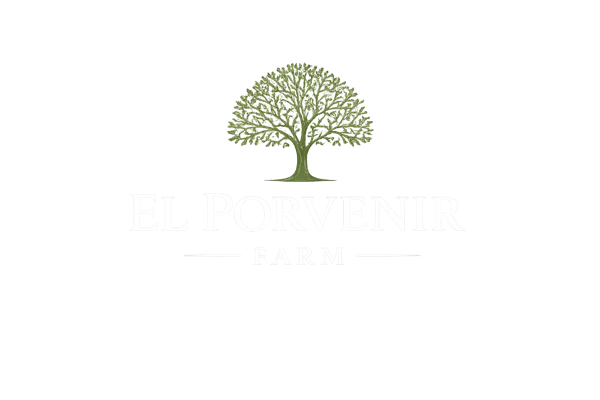

Rooted in nature.Growing the future.
El Porvenir is a family-owned, working pecan farm. With over 20 years of experience in agriculture,
since 2014 we have pursued our passion for dried fruits.

El Porvenir is a family-owned, working pecan farm. With over 20 years of experience in agriculture,
since 2014 we have pursued our passion for dried fruits.